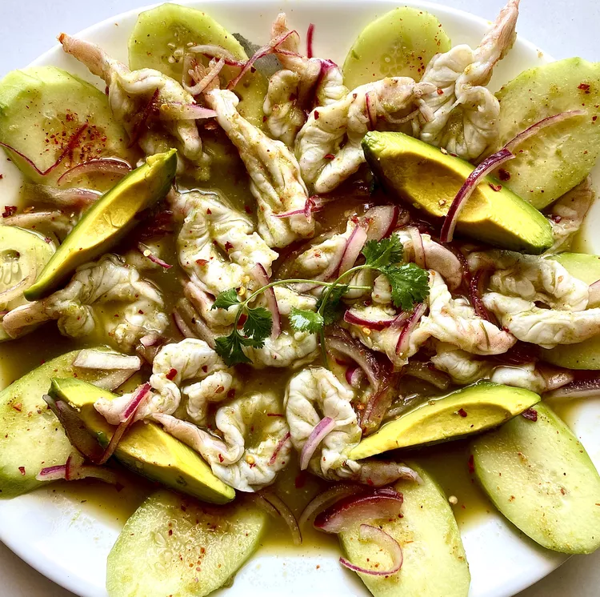

How to make AguaChile

Description
This will keep for up to two days in the refrigerator but is best served within one hour.
Serve it with tostadas on the side and an optional ice-cold Mexican beer to tame down the heat.
Ingredients
- 1 pound large shrimp - peeled, deveined, and butterflied
- 1 ¼ cups freshly squeezed lime juice
- 4 fresh serrano chiles, stemmed
- ⅓ cup fresh cilantro leaves and stems
- 1 ½ teaspoons salt, divided, or to taste
- 1 small red onion, thinly sliced
- 1 avocado - peeled, pitted, and sliced
- 1 cucumber, sliced
2 servings
Steps
- Divide shrimp onto two shallow plates.
- Blend lime juice, chiles, cilantro leaves and stems, and 1 teaspoon salt in a blender until smooth. Pour 1/2 of the mixture over each plate of shrimp.
- Cover and marinate in the refrigerator until shrimp turn opaque and white, 15 to 25 minutes.
- To serve, top each plate with red onion and avocado. Place cucumber around the edges. Sprinkle with remaining salt
Back to Home